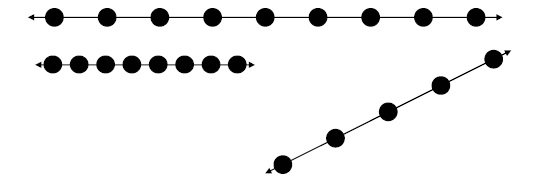
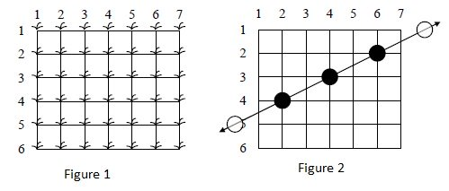
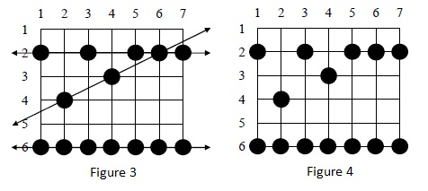
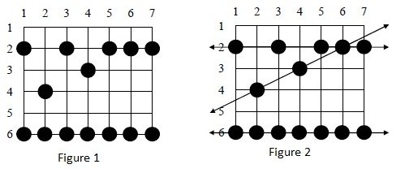

In Rampur, a remote village in India, Monkeys started destroying the banana crop by eating the bananas. The naughtiness of these monkeys over here is legendary. They jump through your banana field at night and damage the crop by eating away all the bananas from the plant. In the morning, after noting which plants have been destroyed, you want to identify the path of the monkey which did the most damage. A monkey always jumps through the field in a straight line, with every jump at the same length as shown below

Your banana plants are arranged on the intersection points of a grid as shown in Figure 1, and the troublesome monkeys jump completely through your field, starting outside the field on one side and ending outside the field on the other side as shown in Figure 2:

Many monkeys can jump through the field, jumping from plant to plant. Every jump lands on a plant and damages it, as in Figure 3.
Note that some plants may be landed on by more than one monkey during the night. You cannot see the lines showing the paths of the monkeys or any of their jumps outside your field (as shown in Figure 4)

The farmers want you to write a function that provides the maximum number of plants destroyed by one monkey with the inputs provided.
Input Specifications:
Your function must read four inputs
input 1-
rows : An integer represent the total number of rows in the field (1<=rows<=100)
Input 2-
columns: An integer represent the total number of columns in the filed (1<=columns<=100)
Input 3-
plants_destroyed : An integer represent the total number of banana plants destroyed where (3<=plants_destroyed<=rows*columns)
Input 4-
destroyed_positions : A string provides you the details of the positions of the plants that are destroyed. The information starts and ends with parenthesis (). Within the parenthesis the positions are represented in the format of (row,column). Multiple positions are presented in the same format but separated by comma as mentioned below.
((row, column ),(row, column)...)
For example: "((2,1),(6,6),(4,2),(2,5),(2,6),(2,7),(3,4),(6,1),(6,2),(2,3),(6,3),(6,4),(6,5),(6,7))"
Note: A destroyed plant is listed only once.
Output Specifications:
The function must return the maximum number of plants destroyed by one monkey or you need to return -1 in case of invalid inputs.
Sample Inputs
Input1(rows) : 6
Input2(columns) : 7
Input3(plants_destroyed) : 14
Input4(destroyed_positions): "((2,1),(6,6),(4,2),(2,5),(2,6),(2,7),(3,4),(6,1),(6,2),(2,3),(6,3),(6,4),(6,5),(6,7))"
Sample Output
7
Explanation
Figure 1 below represents the field with the given inputs and the black dots represent the destroyed plants. You can construct all the paths that monkeys may have followed using the input (as shown in figure 2).

Now you will be only interested in monkeys which have landed on at least 3 of your banana plants in their voyage through the field. Such a path is said to be a monkey path. In this case, it means that the three paths shown in Figure 2 are monkey paths (there are also other possible monkey paths).
The vertical path down column 1 might have been a monkey path with jump length 4 except there are only 2 plants destroyed so we are not interested; and the diagonal path including the plants on row 2 col. 3, row 3 col. 4, and row 6 col. 7 has three destroyed plants but there is no regular jump length which could have spaced the jumps in this way while still landing on at least 3 plants, and hence it is not a monkey path.
Note also that along the line a monkey path follows there may be additional destroyed plants which do not need to be landed on by that path (see the plant at (2, 6) on the horizontal path across row 2 in Figure 2), and in fact some destroyed plants may not be explained by any monkey path at all.
On seeing the maximum plants destroyed in all the three paths is 7.
Instructions:
1) Do not write main function.
2) You can print and debug your code at any step of the code.
3) You need to return the required output from the given function.
4) Do not change the function and parameter names given in editor code.
5) Return type must be the same as mentioned in the problem statement.
6) When you submit your code, test cases of different complexity level are executed in the background and marks are given based on number of test cases passed.
7) If you do not plan to complete the code in one sitting, then please save your work on a local machine. The code is saved only when it has been submitted using Submit button.